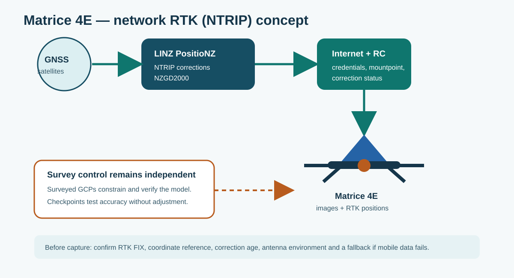
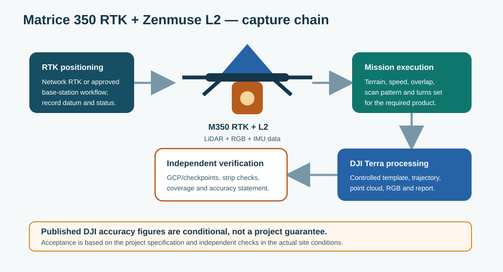
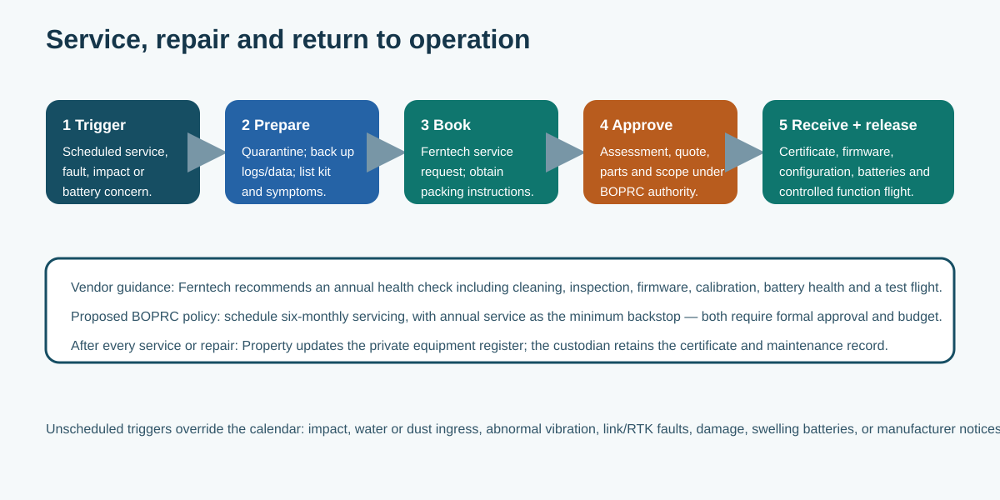
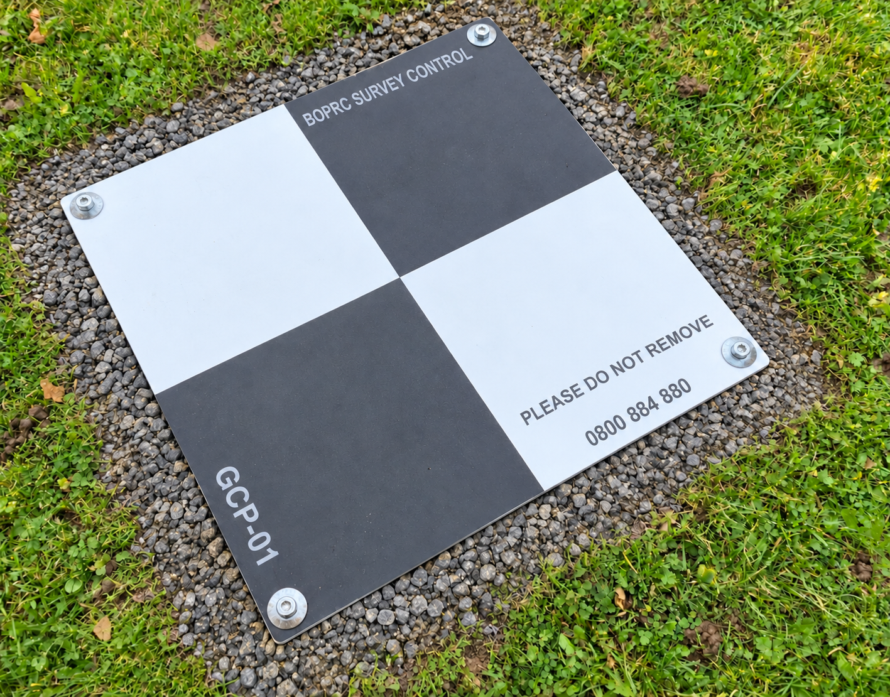
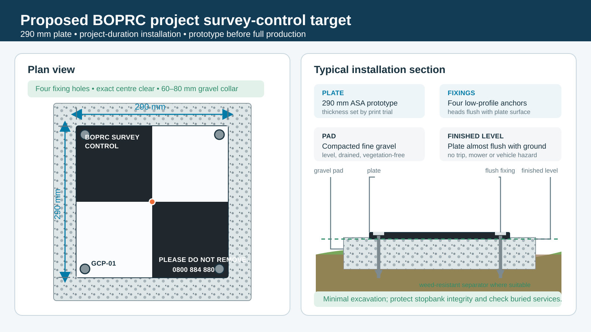

4. Aircraft, servicing and permanent survey control
4.1 Aircraft quick reference
| Matrice 4E — mapping and inspection | M350 RTK + Zenmuse L2 — LiDAR |
|---|---|
| Confirm the mission, required GSD, height, overlap and boundary. | Confirm the supported aircraft, payload and firmware combination. |
| Confirm network RTK/NTRIP correction source, RTK status and home point. | Fit a matched battery pair; check payload mounting, storage, RTK and required calibration. |
| Check focus, exposure, triggering and a short verification area. | Confirm height, speed, line spacing, scan mode, terrain and edge coverage for the job. |
| If corrections become unstable, keep the flight safe and pause survey capture until data quality is understood. | Before leaving site, verify the required LiDAR and trajectory files are present. |

Figure 4. Matrice 4E mapping workflow using an approved NTRIP correction source.

Figure 5. M350 RTK and L2 capture chain. Check the finished work against independent survey control.
Manufacturer guidance: use the current DJI manual matching the aircraft, payload, battery and firmware in use. Published performance figures are conditional; the project's independent checks determine whether the result is acceptable.
4.2 Service and repair
Ferntech's service process includes cleaning and inspection, battery checks, firmware and calibration checks, test flight and maintenance evidence.

Figure 6. Booking, assessment, repair and safe return to service.
Proposed BOPRC starting point — approval required: service the operational fleet every six months, with annual service as the minimum. A fault, impact, water/dust ingress, abnormal vibration, repeated link/GNSS/RTK warning, battery damage or manufacturer notice triggers earlier assessment.
- Mark the affected equipment unavailable and preserve logs and parts.
- Back up project data and document the fault, event, firmware and batteries.
- Submit the current Ferntech service request and follow its packing instructions. Service email checked for this draft: repairs@ferntech.co.nz.
- Obtain the diagnosis, quote, warranty position and internal financial approval.
- Retain the service certificate and parts, firmware, calibration, battery and test-flight records.
- On return, compare the equipment and configuration with the private register.
- Complete a low-risk function flight before production use.
- Close the defect and update Property's register where required.
4.3 Equipment register
Confirmed internal procedure: Property holds and maintains the private equipment and configuration register. Follow that system for additions, transfers, repairs, loss, disposal and material changes. This manual must not publish serial numbers, credentials, unlock details or a live inventory. Flight records use internal asset IDs.
4.4 Permanent project survey control
A permanent control network makes repeat construction surveys easier to compare. It should serve one defined contract work site — not an entire river reach and not neighbouring property.
For a suitable linear site, start with six permanent ground control points (GCPs) plus separate independent checkpoints:
- two near one end of the work;
- two near the other end; and
- two near the middle.
Keep every point inside the confirmed project/contract access area, but outside current and future earthworks, haul routes, plant tracking, laydown, road or stopbank-crest traffic and other likely disturbance. Final locations require field and survey verification.

Figure 7. Put control outside the work — not outside the project. Do not place targets in neighbouring paddocks without specific permission and secure project access.
The photo below shows only the pair that might be visible near one end of a work area. The targets are small, close to the work and clear of disturbed ground.

Figure 8. Conceptual overlay only — not a record of installed BOPRC control. Verify scale, access, services and future works on site.
The proposed in-house target is a 290 × 290 mm ASA plate with black-and-white quadrants, an exact surveyable centre and four low-profile corner fixings. ASA is preferred for the prototype because it is more suitable than PLA for outdoor UV and weather exposure. The council's Bambu Lab H2D has a published dual-nozzle work area of 300 × 320 mm, so the proposed plate fits with a small margin. Confirm the sliced toolpath, final thickness, colour contrast, print settings and outdoor durability through a field prototype.

Figure 9. Proposed face: BOPRC SURVEY CONTROL, unique point number, PLEASE DO NOT REMOVE and 0800 884 880.

Figure 10. Plate installed almost flush on a level compacted fine-gravel pad with a small vegetation-free collar.
Installation:
- Confirm ownership/access, underground services, present and future works, mowing, stock, flooding and erosion risk with the survey lead and site supervisor.
- Remove vegetation and loose topsoil only as needed. Prepare a level, drained, compacted fine-gravel pad and suitable weed-resistant separator.
- Bed the plate almost flush with the surrounding ground. Use a small gravel collar to reduce growth and ponding.
- Use four low-profile fixings appropriate to the ground and services. Avoid raised heads, sharp edges and mower, tyre or trip hazards.
- Survey the exact centre and record its ID, location, method, date, quality, photographs and witness description.
- Before each repeat survey, check the plate against its reference photograph. Resurvey after suspected movement, flooding, grading, vehicle strike or replacement.
Use NZTM2000 / NZGD2000 (EPSG:2193) and NZVD2016 (EPSG:7839) unless the project specifies and records another coordinate system. Keep checkpoints out of the control adjustment: their residuals provide the independent check on the finished product.
The construction-survey sequence is: confirm the design, access and occupied work areas → install control outside the work but inside authorised project access → complete the full pre-construction baseline survey → save that checked route → repeat it during construction where it remains safe and suitable. If the project boundary or work layout changes, revise and record the route deliberately.